This mobile version does not have the slideshow switch
Demo interactions
Drag SlidersUse ArrowsSwitch view
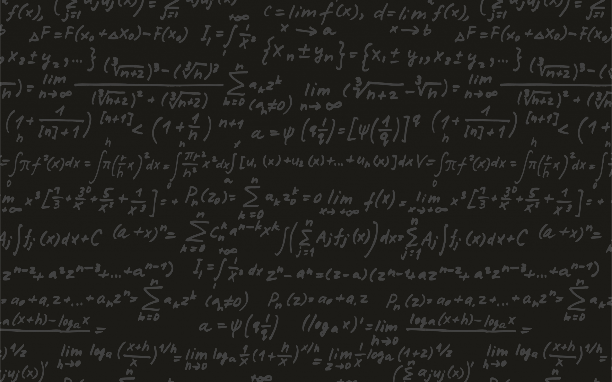
ConceptsTheory and principles behind diffusion
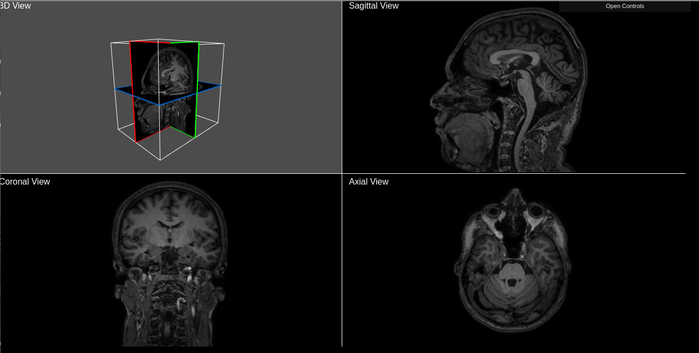
RAW Data: DWI How to represent Medical Image Data
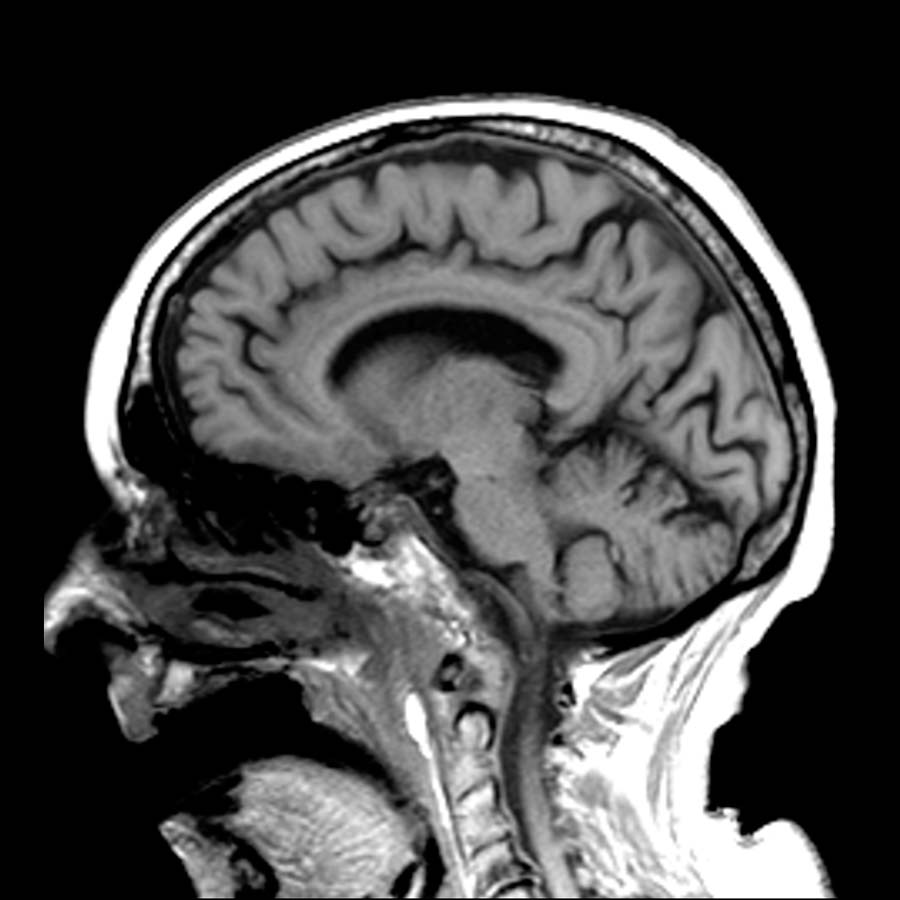
Conversion: DWI to DTI How to obtain diffusion characteristics
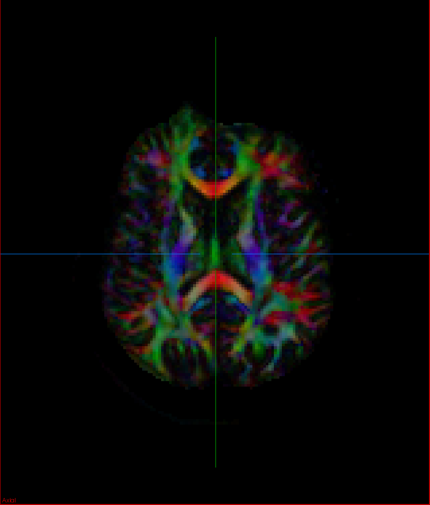
Scalar IndexesRepresenting Data in a Visual Way
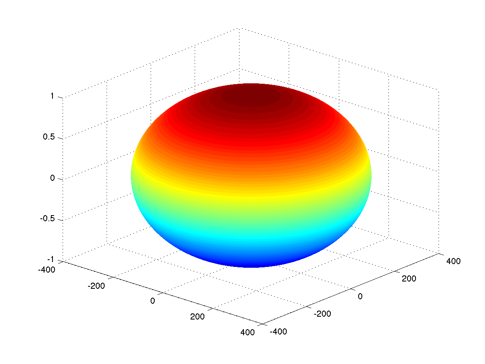
Colormaps What are they and what's the utility?
Glyphs Visualizing Tensors in a Straightfoward Way
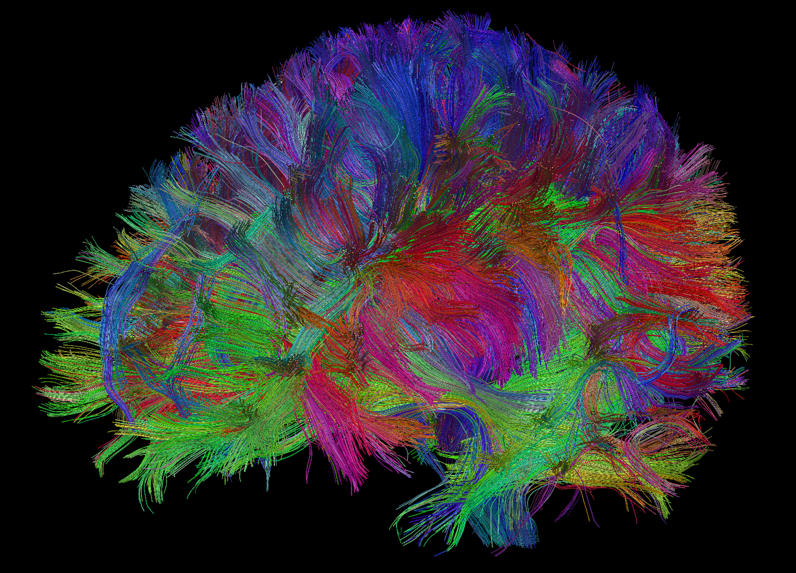
Tractography Visualizing Brain Fibers, a medical revolution
Concepts Theory and principles behind diffusion
Diffusion is a complex motion of molecules, you can see below a simulation showing the difference between diffusion of molecules inside a restricted environment, on the left, and a non-restricted diffusion, on the right.
Particles or molecules in a fluid (liquid or gas) collide randomly with one another and with other molecules, a phenomenon called Brownian motion and their movement can be influenced by the temperature, environment structure, density of molecules, among others. The geometrical properties of the environment determine the rate and orientation of diffusion, when no boundaries restrict water movement, the diffusion is the same in all directions of space and is called isotropic. On the other hand, in a tight path, as an example, the diffusion will be greater in the unobstructed orientation, referred as anisotropic.
The diffusion can be represented mathematically by a tensor, wich can be expressed as a 3x3 matrix. Ultimately, a diffusion ellipsoid is modeled, with possibly different semiaxes lengths given by the matrix's eigenvalues, the eigenvectors are orthogonal and represent the directions of the ellipsoid's axes [1]. The ellipsoids in the animation represent the diffusion ellipsoid of the molecules in each case.
In human tissues, cell membranes, large protein molecules and fibers limit the motion of water molecules. Therefore measuring diffusion directionality can reveal information about the tissues' path and connections [2].
Diffusion Weighted Image (DWI) shows contrast based-on diffusion differences of water molecules inside the brain.
=======
Diffusion Weighted Image (DWI) shows constrast based-on diffusion differences of water molecules inside the brain.
>>>>>>> be2eda0bf37f57f52cc7cf85c960ad47c6bfc8bf
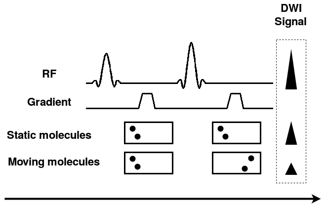
DWI acquisition
The diffusion represents random thermal motion of the molecules, also known as Brownian motion. It depends on the various factors as molecule type at study, temperature and the micro-environment in which diffusion takes place [1]. In a fibers bundle, the effective molecular diffusion is greater in direction along the fiber than in orthogonal direction to fiber. This type of diffusion is known as anisotropic diffusion in contrast to isotropic diffusion [2].
DWI acquisition is done applying two magnetic field gradients: the first one causes phase shifts in the molecules while the second one cancel these shifts reorienting stationary spins. Reorientation to the initial state will not be perfect for molecules that have moved during lapse between gradients. This "not perfect reorientation" causes a signal loss. The signal loss magnitude is determined by the degree of random movement (given by environment diffusion coefficient) and the gradients intensity and duration. The loss signal magnitude can be improved increasing intensity and duration of the gradients.
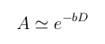
Signal loss
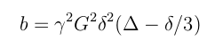
Diffusion coeficient
Where A represents the signal loss, D is the diffusion coefficient and b is a variable that depends of the applied gradients. So, in DWI, the signal intensity per voxel is the signal intensity without applied gradient (IS0: = 0s/mm2) reduced by the signal loss A. In presence of anisotropy, in order to achieve tissue full characterization gradients in various directions are applied obtaining a intensity 3D map in each direction (ISn).
Conversion DWI to DTI How to obtain diffusion characteristics
From the diffusion-weighted signals, information about the diffusivity of the water molecules in
the tissues can be obtained after the application of a processing on the generated signals. This
processing consists in estimating for each voxel a diffusion tensor D that
best synthesizes all the measured diffusion-weighted signals. This estimation is based on the
Stejskal-Tanner's equation [2]
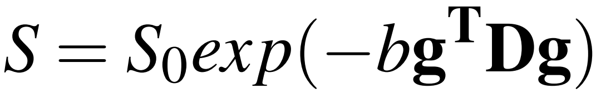
and the logic used to obtain it can be found in [1]. In this equation, S is usually defined as
the diffusion-weighted signal measured with a diffusion weighting factor b > 0 and a gradient in the direction g =
[gx; gy; gz]T(the index T stands
for the vector transpose, making it a column vector), S0 is a signal without weighting (b = 0)
and D is the desired tensor.
The desired tensor D is a symmetric matrix of order 2. Thus, Dij =
Dji:
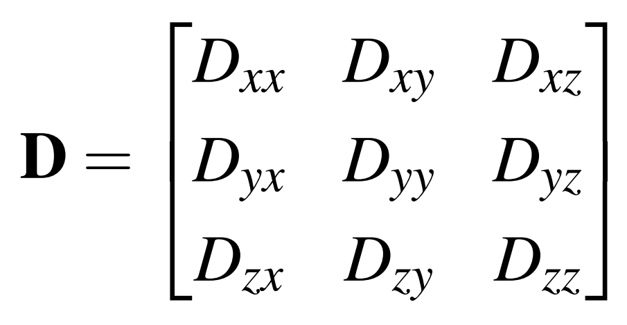
Through the diagonalization, the tensor D is decomposed into three eigenvalues
λ1, λ2 e λ3 (λ1 > λ2 > λ3)
and their respective eigenvectors e1, e2 e e3. The eigenvalues
are diffusion coefficients in the directions of diffusion indicated by eigenvectors. To determine the
tensor D, at least 1 volume without weighting and at least 6 volumes of DWI is required.
This is due to the fact that, because it is symmetrical, there are only 6 elements to be discovered:
Dxx, Dyy, Dzz,
Dxy, Dxz and Dyz.
In order to find the best solution for the Stejskal-Tanner's equation, several methods of regression
are available in the literature to estimate these six elements. [3] separates these methods into four classes:
maximum likelihood, least squares, Bayesian, and robust approaches. Among them, those based on least-squares
regression are the most popular. In addition, a linear least squares approach, linearly weighted and non-linear
[4,5] is also distinguished. On the other hand, the most recommended models are those that use robust approaches
[6] able to identify and exclude discrepant values from the estimation process.
Scalar indexes are values that encapsulate the computed eigenvectors and eigenvalues from DTI (as discussed on previous section) in a single index. The goal is generate a speedy interpretation of the diffusion characteristics on rendered images. Many approaches have been proposed in [1]. Two main approaches [2], based on eigenvalues, are presented next, both represent the magnitude of the diffusion.
Mean Diffusivity (MD)
As the name implies, Mean Diffusivity (MD) is computed by the mean of the three eigenvalues, that is,
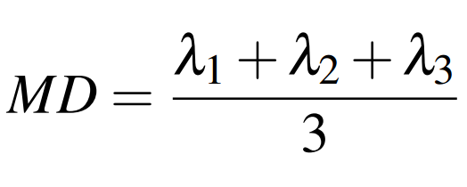
The result volume can be observed next.
Sagittal:
Coronal:
Axial:
Functional Anisotropy (FA)
FA is a normalized measure of the fraction of the tensor's magnitude due to anisotropic diffusion [2], it is normalized in the range [0,1],
where 0 indicates a isotropic diffusion tensor and 1 an anisotropic one, it does not contain any information about the orientation.
The FA index can be computed by the following equation:
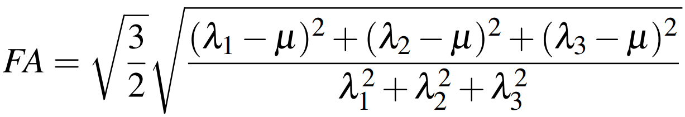
where
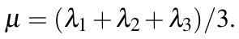
The result volume can be observed next.
Sagittal:
Coronal:
Axial:
The scalar index presented above are represented in gray scale, therefore, on the volumes, brighter areas represent higher anisotropic
diffusion and darker areas represent isotropic regions.
These indexes do not contain any information regarding orientation, therefore a colormap can be employed to add more information
over the volume. More about scalar indexes can be found on the references. Colormaps are discussed on the next section.
Colormap is, as the name suggest, a map between a variable and a color. In a 3D spatial context, the color is used to indicate a specific spatial direction,
that is, a 3D spatial vector direction will be translated in a specific color. To find a correlation that bring value to the desired spatial visualization is
a challenging task to designers and final users, because different choices may enhance different aspects. Below we propose a series of visual representations
of different colormaps, each one is rendered in a sphere where the normal vector of a point in the surface represent the spatial direction considered on the map.
Absolute value Colormap
In this colormap the absolute value of the three component of the 3D Spatial vector (x,y,z) is translated into RGB colors.
The tensor glyphs are graphic objects that describe the eigenvalues and eigenvectors of a tensor [1]
through their geometric (for example, shape) and graphical (for example, color) properties. The properties of a tensor
can be more easily analyzed by linking them to the domain proposed by Westin et al. [2] that encompasses
all the geometric forms that a glyph can take [3].
The eigenvalues tell us the diffusivity in the direction of their respective eigenvectors. According to their relations,
the diffusion type can be divided into three basic classes: linear (λ1 >> λ2 ≈ λ3),
planar (λ1 ≈ λ2 >> λ3), and spherical
(λ1 ≈ λ2 ≈ λ3) [2]. Westin et al. Also show
that to expand the tensor using these three cases as a
base, one can write (λ1 - λ2), (λ2 – λ3) and
λ3 as the coordinates of this new base and achieve a significant geometric
interpretation for the diffusion tensor. When normalizing these coordinates with respect to the sum of the eigenvalues
and rearranging the normalized coordinates such that they are in the interval [0, 1] and that the sum of them is 1, we obtain
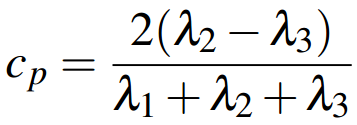
Planar
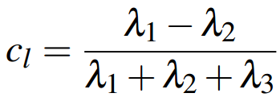
Linear Spherical
Glyph classes.
which define a barycentric parametrization of a triangular domain with the linear, planar and spherical cases at the ends,
as shown in Figure below. Through this triangular domain, we can obtain all the different forms that a glyph can assume based
on eigenvalues.
Nowaday, the main glyphs used are cuboid, cylinder, ellipsoid and superquadric. Cuboids, shown in Figure (a), can express
through the orientation of their faces and their size, respectively, the directions of diffusion and diffusivity. The
disadvantage of cuboids is their flat faces that make it difficult to perceive their 3D geometry in a 2D plane, which can
lead to misinterpretation [1]. Cylinders, shown in Figure (b), express the main direction of diffusion
through its axis. Its disadvantage is the sudden rotation of 90 degrees in its shape, causing discontinuities in the
visualization [4]. Ellipsoids, shown in Figure (c), are the most commonly used tensor glyphs and represent the
main direction of diffusion through their orientation. They have a rotational symmetry that avoids incorrect interpretation
of the orientation [1], but some of its different forms may have similar appearance from a certain
point of view [3].
In order to overcome the disadvantages raised by the proposed glyphs, Kindlmann presented the superquadric glyphs for
diffusion tensors with the use of superquadric functions [3]. In these new glyphs, he was able to combine
the positive characteristics of cuboid, cylindrical, and ellipsoid glyphs. Figure (d) illustrates the superquadric glyphs.
λ1:
λ2:
λ3:
Cl:
Cp:
Cs:
One problem that the glyphs have is that they expose the individual characteristics of diffusivity of the tensors of the
samples. They do not give the overall notion of continuity that deals have. Tractography is a response to this deficiency.
Although this work proposes to develop a system of visualization of diffusivity tensors by colored glyphs, we will, by
completeness, make a brief presentation of tractography.
Tractography is a visual representations of brain white matter fiber anatomy, as such, explore the next visualization to observe some neural connections before anything else.
Estimating those fibers is the final result of a great many number of transformations, as explained in the previous sections, which cumulated
in a mathematical representation of the majority of fibers in a human brain.